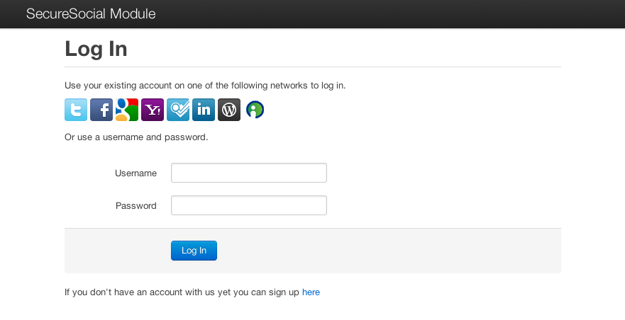
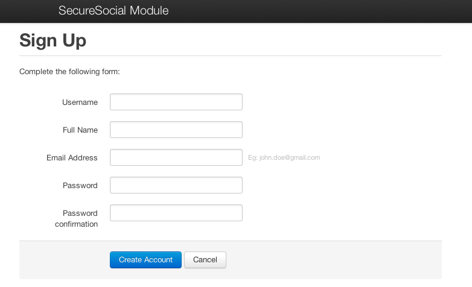

Get help with google
SecureSocial allows you to add an authentication UI to your app that works with services based on OAuth1, OAuth2, OpenID and OpenID+OAuth hybrid protocols.
It also provides a Username and Password mechanism for users that do not wish to use existing accounts in other networks.
The following services are supported in this release:
The module does not depend on any external Java libray. It relies only on what the Play! Framework provides and uses the awesome Bootstrap toolkit from Twitter to style the UI.
There is a live demo at http://securesocial-jaliss.rhcloud.com. You can try all the providers there except the Username and Password one because the app cannot send emails on that server.
Source code is available at https://github.com/jaliss/securesocial
Written by Jorge Aliss (@jaliss)
To install SecureSocial add it as a dependency in your dependencies.yml file:
require:
-play -> securesocial {version}
Then execute:
play deps
Add the following to your routes file:
* /auth module:securesocial
To restrict access to authenticated users just add @With( SecureSocial.class ) to your controller:
@With( SecureSocial.class )
public class Application extends Controller {
public static void index() {
render();
}
}
Trying to access any action on a protected controller will show a login page if the user has not been authenticated yet.
On the login page users can select their preferred accout in one of the supported services (Eg: Twitter, Facebook) or use a username/password combination if they don’t want to use an existing account.

A sign up form is provided to allow users to create an account in your application.

When users create an account they need to verify their email address clicking on a link they receive on a welcome email.
SecureSocial needs you to provide some settings to work property as described below.
You can customize which identity providers your application uses and the order they appear in the login page as follows:
securesocial.providers=twitter,facebook,google,googleopenid,yahoo,foursquare,linkedin,wordpress,myopenid,userpass,github
For example if you only wanted to use Twitter, Facebook and Google (OpenID + OAuth) you would set it as:
securesocial.providers=twitter,facebook,google
The values for this property come from the ProviderType enum. If you don’t set this, SecureSocial will display all the providers in the login page.
Note: The userpass provider always appears below the icons row. If you need another layout
you’ll have to change the login page template.
For each OAuth based provider you plan to use you need to register your application at the developer’s site of each service and include the corresponding properties in your application.conf.
#
# Twitter
#
securesocial.twitter.requestTokenURL=https://twitter.com/oauth/request_token
securesocial.twitter.accessTokenURL=https://twitter.com/oauth/access_token
securesocial.twitter.authorizationURL=https://twitter.com/oauth/authenticate
securesocial.twitter.consumerKey=your_consumer_key
securesocial.twitter.consumerSecret=your_consumer_secret
#
# Facebook
#
securesocial.facebook.authorizationURL=https://graph.facebook.com/oauth/authorize
securesocial.facebook.accessTokenURL=https://graph.facebook.com/oauth/access_token
securesocial.facebook.clientid=your_client_id
securesocial.facebook.secret=your_client_secret
securesocial.facebook.scope=email
#
# Google
#
securesocial.google.requestTokenURL=https://www.google.com/accounts/OAuthGetRequestToken
securesocial.google.accessTokenURL=https://www.google.com/accounts/OAuthGetAccessToken
securesocial.google.authorizationURL=https://www.google.com/accounts/OAuthAuthorizeToken
securesocial.google.scope=http://www-opensocial.googleusercontent.com/api/people
securesocial.google.consumerKey=your_consumer_key
securesocial.google.consumerSecret=your_consumer_secret
#
# Google with OAuth2
#
securesocial.googleoauth2.authorizationURL=https://accounts.google.com/o/oauth2/auth
securesocial.googleoauth2.accessTokenURL=https://accounts.google.com/o/oauth2/token
securesocial.googleoauth2.scope=https://www.googleapis.com/auth/userinfo.profile https://www.googleapis.com/auth/userinfo.email
securesocial.googleoauth2.clientid=your_client_id
securesocial.googleoauth2.secret=your_client_secret
#
# Yahoo
#
securesocial.yahoo.requestTokenURL=https://api.login.yahoo.com/oauth/v2/get_request_token
securesocial.yahoo.accessTokenURL=https://api.login.yahoo.com/oauth/v2/get_token
securesocial.yahoo.authorizationURL=https://api.login.yahoo.com/oauth/v2/request_auth
securesocial.yahoo.consumerKey=your_consumer_key
securesocial.yahoo.consumerSecret=your_consumer_secret
#
# LinkedIn
#
securesocial.linkedin.requestTokenURL=https://api.linkedin.com/uas/oauth/requestToken
securesocial.linkedin.accessTokenURL=https://api.linkedin.com/uas/oauth/accessToken
securesocial.linkedin.authorizationURL=https://api.linkedin.com/uas/oauth/authenticate
securesocial.linkedin.consumerKey=your_consumer_key
securesocial.linkedin.consumerSecret=your_consumer_secret
#
# Foursquare
#
securesocial.foursquare.authorizationURL=https://foursquare.com/oauth2/authenticate?response_type=code
securesocial.foursquare.accessTokenURL=https://foursquare.com/oauth2/access_token?grant_type=authorization_code
securesocial.foursquare.clientid=your_client_id
securesocial.foursquare.secret=your_client_secret
#
# GitHub
#
securesocial.github.authorizationURL=https://github.com/login/oauth/authorize
securesocial.github.accessTokenURL=https://github.com/login/oauth/access_token
securesocial.github.clientid=your_client_id
securesocial.github.secret=your_client_secret
securesocial.github.organization=optional_organization
Some providers use a scope property. The values shown above are what SecureSocial needs to provide your app with the name, email and avatar of your users. If you need permissions you can add the required scopes in a comma separated list.
If you are going to use the UsernamePassword provider set the following properties that are required by the Mailer:
#
# Mailer
#
securesocial.mailer.subject=Activate your account
securesocial.mailer.from=you@at.your.company.com
To customize the email body change the views/securesocial/Mails/sendActivationEmail.html template.
By default when users log out they are taken to the login page. You can customize the destination by adding the following property in your application.conf:
#
# Logout redirection
#
securesocial.logout.redirect=MyController.myAction
You can specify an action or a URL to redirect to.
You can access the current user in secured and non-secured controllers by executing:
SocialUser user = SecureSocial.getCurrentUser();
The SocialUser object has the following attributes:
The module tries its best to provide that information however some providers might not make all available. For example Twitter and LinkedIn do not expose the user’s email in their APIs.
Depending on the authMethod the module sets values on different attributes of the user object:
- AuthenticationMethod.OAuth1 and AuthenticationMethod.OPENID_OAUTH_HYBRID
- AuthenticationMethod.OAuth2
- AuthenticationMethod.USER_PASSWORD
SecureSocial adds a user object to the render arguments of each action in a secured controller. To display user information you can do something like:
<div class="page-header">
<h2><img src="${user.avatarUrl}" width="40px" height="40px"/>Welcome ${user.displayName}</h2>
</div>
<div class="clearfix">
<h2>User details</h2>
<ul>
<li>User id: ${user.id.id}</li>
<li>Logged in from: ${user.id.provider}</li>
<li>Email: ${user.email}</li>
</ul>
</div>
If you need the user object in non secured templates you can use the SecureSocialPublic controller.
@With( SecureSocialPublic.class )
public class MyPublicController extends Controller {
public static void index() {
render();
}
}
OAuth1 sample:
SocialUser user = SecureSocial.getCurrentUser();
JsonObject me = WS.url("http://api.twitter.com/1/account/verify_credentials.json").
oauth(user.serviceInfo,user.token, user.secret).get().getJson().getAsJsonObject();
OAuth2 sample:
SocialUser user = SecureSocial.getCurrentUser();
JsonObject me = WS.url("https://graph.facebook.com/me?access_token=%s", user.accessToken).
get().getJson().getAsJsonObject();
To invoke the right APIs you need to find out what provider the user belongs to. You can do it as follows:
SocialUser user = SecureSocial.getCurrentUser();
if ( user.id.provider == ProviderType.facebook ) {
...
}
The ProviderType enum has values for all the supported providers.
This module does not persist users in the database. It relies on an implementation of the UserServiceDelegate interface for that.
There is a default implementation that stores things in a HashMap included that can be used for development mode, however for production use you need to provide a valid implementation within your application.
The interface defines the following methods:
public interface UserServiceDelegate {
SocialUser find(UserId id);
SocialUser find(String email);
void save(SocialUser user);
String createActivation(SocialUser user);
boolean activate(String uuid);
void deletePendingActivations();
String createPasswordReset(SocialUser user);
SocialUser fetchForPasswordReset(String username, String uuid);
void disableResetCode(String username, String uuid);
}
The find and save methods are required by all providers. The createActivation, activate and deletePendingActivations methods are used for the Username Password provider.
If you do not plan to use it you can provide empty implementations for those methods.
When the application starts SecureSocial looks for a UserServiceDelegate implementation in the classpath and uses it automatically. You do not need to configure anything else for it to be picked up.
Note: check the documentation in the source code for more information on these methods.